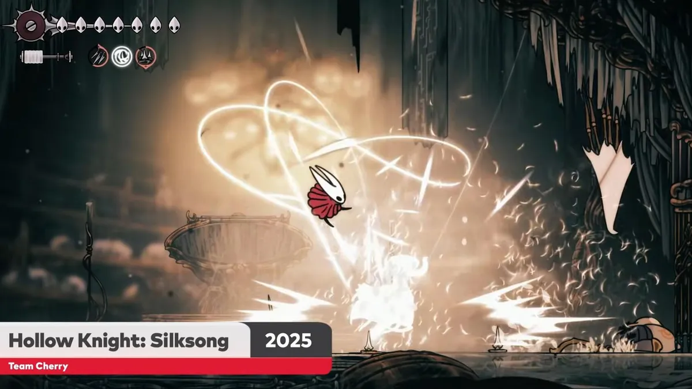

Notícias? Não

Sim, Hollow Knight: Silksong foi confirmado para lançamento em 2025, com um breve trailer exibido durante um Nintendo Direct focado no Nintendo Switch 2. O jogo aparecerá como um título third-party parceiro na apresentação segundo a Flow Games. O lançamento está previsto para todas as plataformas, incluindo PC (Windows, macOS e Linux), PlayStation 4, PlayStation 5, Xbox One, Xbox Series S e X, e Nintendo Switch. A data exata ainda não foi divulgada, mas especula-se que possa ser antes do Natal. O jogo é a aguardada sequência do aclamado Hollow Knight, onde os jogadores controlam a caçadora Hornet.

Hollow Knight: Silksong foi, de fato, um dos destaques do Xbox Games Showcase 2025, com uma janela de lançamento confirmada para este ano. O jogo será lançado no Xbox Game Pass e estará disponível no novo portátil ROG Xbox Ally. Embora uma data específica não tenha sido divulgada, espera-se que o jogo seja lançado antes do final do ano, possivelmente coincindo com o lançamento do ROG Xbox Ally.